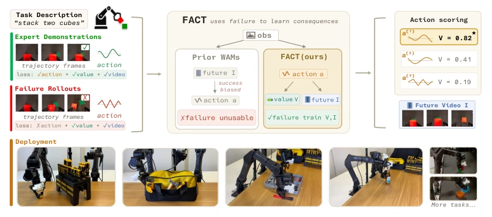
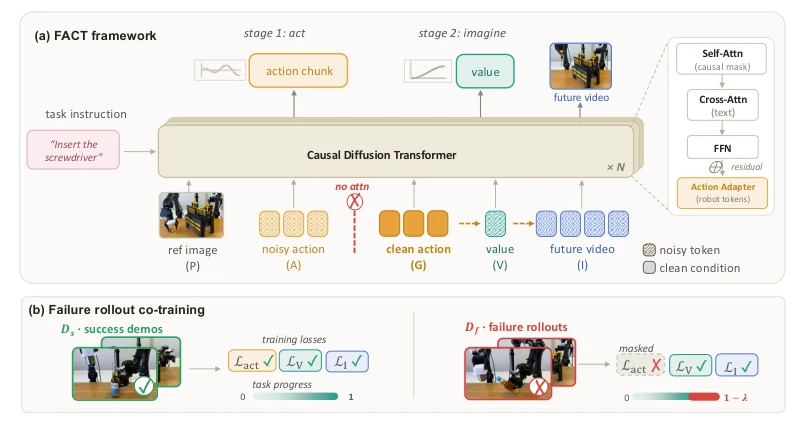
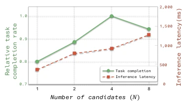
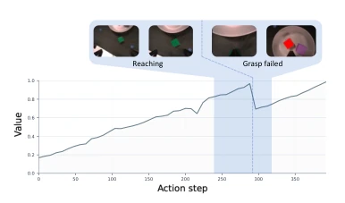
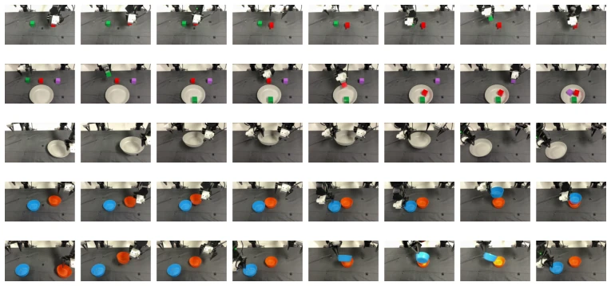
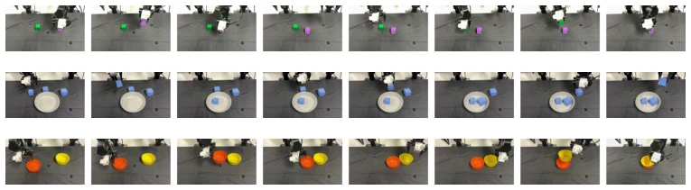
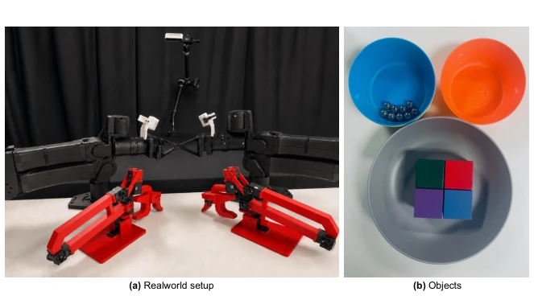
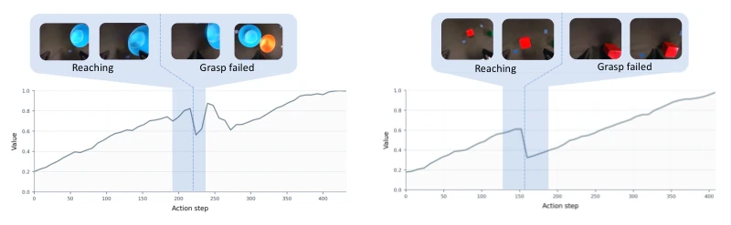
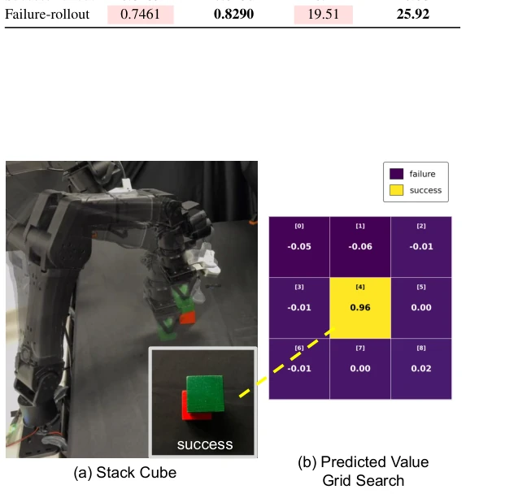

This paper offers a potent remedy for World Action Models (WAMs): stop fixating solely on successful demonstrations; failure data is the real gold. FACT's core logic is straightforward: since models tend to "hallucinate" successful futures under bad actions, we directly feed the consequences of bad actions to it, while simultaneously masking the action imitation labels, forcing it to learn only consequences without learning bad behaviors. This "using poison to counter poison" strategy is indeed effective, improving success rates in both simulation and real hardware, especially when handling unseen tasks, where such "blind confidence" hallucinations are significantly reduced. However, the authors did not speak definitively, admitting that this method may still need refinement when extended to human-robot interaction data, and while implementing a "Best-of-N" scoring during inference is stable, the computational cost has indeed increased. Overall, this is a pragmatic work that retrieves "failure" from the trash heap to use as teaching material; although it does not solve all pitfalls in the physical world, at least it makes the model no longer a "people-pleaser" who only reports good news and not bad news.
Existing World Action Models (WAMs) universally suffer from a fatal weakness: they primarily rely on successful expert demonstrations for training [1, 2, 3, 4]. This training method causes the model, when predicting the future, to tend to "hallucinate" successful results even under incorrect action inputs, known as "success-biased hallucination" [13, 14]. For example, when the model executes an erroneous action that would lead to a collision, it may still predict a false future where objects move smoothly, because the training data lacks causal pairs of "bad actions leading to bad results". Although some works attempt to introduce prediction as an auxiliary signal [5, 6, 7, 8, 9, 10, 11, 12], they typically limit prediction targets to expert demonstrations, failing to utilize failure trajectories to correct the causal link between actions and consequences. This leads to the model lacking real physical priors to correct decisions when facing bad actions during testing. Therefore, how to utilize failure trajectories to supervise the consequence prediction of world models without taking failure actions as imitation targets becomes a key issue for improving policy robustness.

Figure 1: FACT first generates an action and then rolls out the resulting future video and task- progress value. Because each future unfolds from the action that produced it, failure rollouts directly supervise the future-prediction branch under their own bad actions, teaching the world model what wrong behavior actually leads to.
FACT proposes a causal training framework, the core of which lies in decoupling "action generation" from "consequence prediction". The overall process is divided into two stages: training and inference. In the training stage, the model receives successful demonstrations and failure trajectories. For successful data, the model simultaneously optimizes action generation, future video prediction, and task progress values; For failure trajectories, the model masks the Action Imitation Loss, retaining only the supervision signals for future video and progress values. The key lies in architecture design: the model adopts a shared causal diffusion Transformer, but introduces a "teacher-forcing" mask on the attention mechanism. Specifically, the conditional input for the world branch (video and value prediction) is clean Ground-Truth actions (Token G), rather than the noise actions (Token A) currently generated by the model. This means that regardless of whether the input is a successful or failure trajectory, the prediction of video and values is strictly based on the actually executed actions, thereby ensuring the model learns "the real consequences caused by the action", rather than "the ideal consequences the action should cause". In the inference stage, a two-stage strategy is adopted: Stage 1 generates candidate actions, Stage 2 fills these actions into clean G slots, predicting corresponding future videos and progress values. Progress values can serve as an optional scoring signal, used to select the optimal one among multiple candidate actions, or used solely for action generation. This design allows failure data to directly correct the world model's understanding of physical dynamics, without contaminating the policy itself.

Figure 2: FACT architecture. (a) A shared causal diffusion transformer denoises action, value, and future-video tokens; value and future video condition on the clean action slot G, not the noisy A. At inference, Stage 1 denoises an action chunk, which fills G for Stage 2 value and future-video prediction. (b) Success demonstrations supervise all three losses; failure rollouts mask Lact but keep value and future-video supervision with a lowered progress target—failures teach consequences, not behavior.

Figure 7: Choices of different N. Relative task completion and inference latency as the candidate count N varies on a long-horizon grasping task; N=4 balances the two.
The authors conducted extensive evaluation on the RoboTwin simulation environment and real-world dual-finger manipulation tasks. In terms of simulation, on 50 tasks, after introducing failure data, FACT's average success rate improved from 81.8% to 87.5%, approaching the SOTA Motus [7]. In real-world experiments, on 5 seen tasks and 3 unseen tasks, FACT outperformed baselines such as Cosmos [6], π0 [3], and Motus [7]. Especially in unseen tasks, introducing failure data improved the success rate from 67% to 77%, proving its generalization capability. Ablation studies show that removing video co-training or causal masks leads to significant performance degradation, while directly imitating failure actions severely damages the policy. Additionally, future prediction quality (PSNR) improved from 19.51 to 25.92 on failure trajectories, confirming that the model successfully suppressed success-biased hallucinations. The optional candidate scoring mechanism (N=4) further improved the real task success rate to 92%, but increased inference latency.

Figure 8: Task-progress value over a rollout. Value drops at a missed grasp and recovers af- ter re-grasping, supporting its use as an action- conditioned ranking signal.

Figure 9: Seen real-world tasks. Rollout image sequences for the five seen tasks reported in Table 2, ordered from top to bottom as Stack Cubes, Pick Cubes, Hand-over, Stack Bowls, and Pour.

Figure 10: Unseen real-world tasks. Held-out task variants used for Table 3, ordered from top to bottom as Stack Cubes, Pick Cubes, and Stack Bowls.

Figure 11: Real-world hardware setup. As shown in (a), we use two YAM arms, three RGB camera views, and a GELLO teleoperation device. The objects we used in real-world experiments are shown in (b).

Figure 12: Additional action-conditioned value traces. Predicted task-progress values over roll- outs on Stack Bowls (left) and Stack Cubes (right).

Figure 13: Action-conditioned value heat map. On Stack Cubes, the learned value head scores the successful center placement higher than failed placements around it.